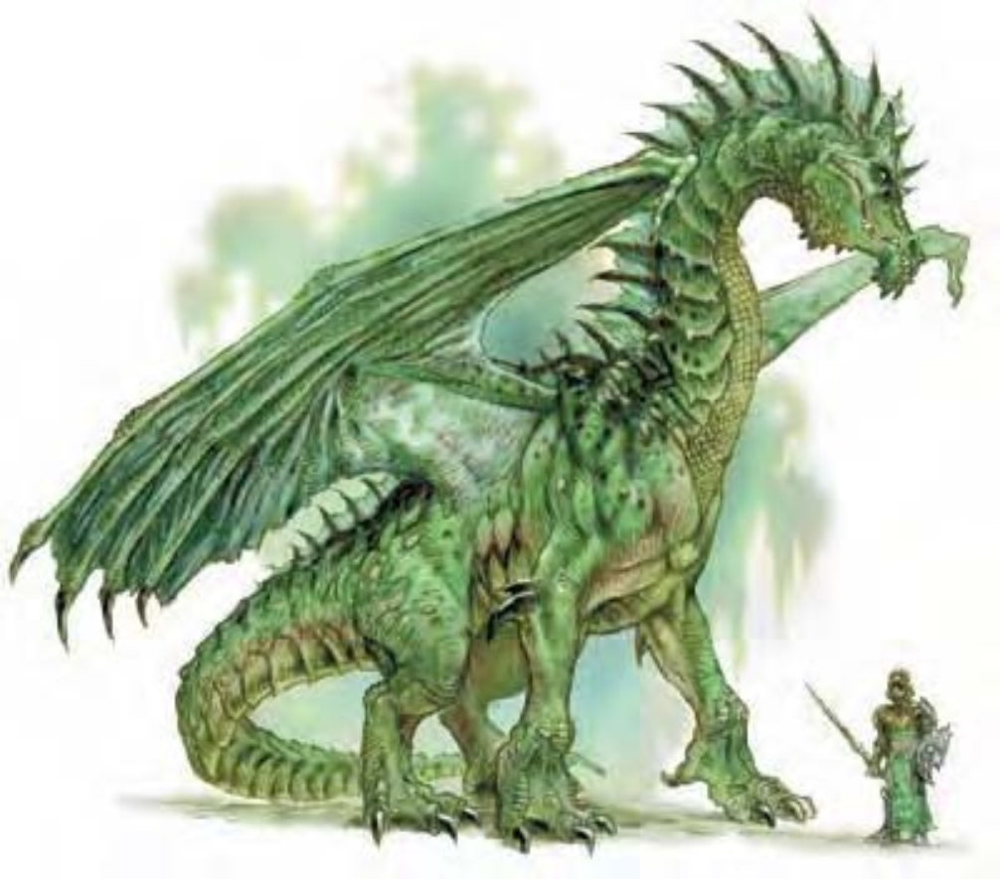

绿龙弯曲的颚线露出利牙，脊刺从眼睛周围一直长到尾巴，最高点位于头颅后方，身边有氯的味道，鳞片闪耀着绿宝石的光芒。
绿龙极为好战，即使没有被激怒也会发动攻击。
雏龙鳞片既薄又小，呈现近乎黑色的墨绿色。随着年龄增长，鳞片随之变大变轻，颜色也变为翠绿或橄榄绿，让他们更容易融入森林的环境里。
绿龙将巢穴建在树林里，树龄越老，树木越大就越好。他们喜欢住在悬崖山丘的洞穴里，巢穴的四周有股刺鼻的氯气味道。绿龙什么都吃，真的很饿的时候连灌木或小树都吃，不过最爱的食物是精灵和小妖精。
环境：温带森林。
组织：雏龙、幼龙、少年龙、青少年龙和青年龙：单独或数尾 (2-5)；成年龙、壮年龙、老年龙、极老龙、古龙、上古龙或太古龙：单独、成双或一家 (1-2，加上 2-5 个后代)。
挑战级数：雏龙3、幼龙4、少年龙5、青少年龙8、青年龙11、成年龙13、壮年龙16、老年龙18、极老龙19、古龙21、上古龙22、太古龙24。
宝藏：三倍标准。
阵营：总是守序邪恶。
进化：雏龙6-7HD；幼龙9-10HD；少年龙12-13HD；青少年龙15-16HD；青年龙18-19HD；成年龙21-22HD；壮年龙24-25HD；老年龙27-28HD；极老龙30-31HD；古龙33-34HD；上古龙36-37HD；太古龙39+ HD。
等级修正值：雏龙+5；幼龙+5；少年龙+5；青少年龙+6；其余无。
| 资料栏位 | 成年绿龙 (Adult Green Dragon) 超大型龙 (风系) |
| 生命骰 | 20d12+100 (230HP) |
| 先攻 | +0 |
| 速度 | 40英尺 (8格)、游泳40英尺、飞行150英尺 (不良) |
| 防御等级 | 27 (-2体型、+19天生)、接触8、措手不及27 |
| 基本攻击/擒抱 | +20 / +36 |
| 攻击 | 啮咬+26近战 (3d8+8) |
| 全力攻击 | 啮咬+26近战 (3d8+8) 及 2爪抓+21近战 (2d6+4) 及 2翼击+21近战 (1d8+4) 及 尾巴拍击+21近战 (2d6+12) |
| 占据/触及 | 15英尺 / 10英尺 (啮咬时15英尺) |
| 特殊攻击 | 喷吐攻击、碾压、威势、类法术能力、法术 |
| 特殊能力 | 伤害减免5 / 魔法、黑暗视觉120英尺、对强酸/“睡眠术”/麻痹免疫、昏暗视觉、法术抗力21、水中呼吸 |
| 豁免 | 强韧+17、反射+12、意志+15 |
| 属性 | 力量27、敏捷10、体质21、智力16、感知17、魅力16 |
| 技能与专长 | 唬骗+20、专注+15、交涉+13、躲藏+0、威吓+25、神秘知识+18、自然知识+18、聆听+25、潜行+20、搜索+23、察言观色+11、法术辨识+25、侦察+25、游泳+16 专长：警觉、顺势斩、空袭、盘旋、精通天生武器 (啮咬)、猛力攻击、翻转 |
| 环境/阵营/CR | 温带森林 / 总是守序邪恶 / 挑战级数：13 |
只要稍微被激怒，甚根本就没被激怒，绿龙就会对任何体型的生物发动攻击。如果对手看起来诡计多端或难以对付，他会跟踪目标以决定何时最适合发动攻击，以及最恰当的战斗策略。如果对手看起来很弱，绿龙就会大刺刺出现，享受对手被恐惧笼罩的感觉。有时候绿龙会用威吓和“暗示”来控制人形生物。绿龙特别喜欢逼问冒险者，了解他们的社会和能力，打听最近发生了什么事情，以及附近是否有宝藏。
喷吐攻击 (超自然)：绿龙只有一种喷吐攻击，射出锥状腐蚀强酸气体。50英尺锥状，12d6点强酸伤害，通过反射检定 (DC=25) 则伤害减半。
水中呼吸 (特异)：绿龙可以在水中呼吸，潜水时仍可使用喷吐攻击、法术及其他能力。
类法术能力：每天3次――“暗示” (成年龙或更老的龙)、“支配人类” (古龙或更老的龙)；每天1次――“植物滋长” (老年龙或更老的龙)、“命令植物” (太古龙)。
技能：“唬骗”、“躲藏”和“潜行”为绿龙的本职技能。
碾压 (特异)：范围15英尺x15英尺；对小型以下的生物造成2d8+12点敲击伤害，对手若未通过反射检定 (DC=23) 则被压制；啮咬加值+36。
威势 (特异)：半径180英尺，对HD 19以下生物有效，通过意志检定 (DC=21) 则无效。
类法术能力 (成年龙)：每天3次――“暗示”，施法者等级6，豁免检定DC=16。
法术 (成年龙)：视同五级术士。一般已知术士法术 (6/7/5；豁免检定DC=13+法术等级)：
零级――“秘法印记”、“舞光术”、“侦测魔法”、“幻音术”、“阅读魔法”、“提升抗力”；
一级――“脚底抹油”、“涅斯图遮蔽灵光”、“护盾术”、“克敌先机”；
二级――“朦胧术”、“侦测思想”。
水中呼吸 (特异)：可以在水中呼吸，潜水时仍可使用喷吐攻击、法术及其他能力。
| 年龄层 | 体型 | 生命骰 (HP) | 力 | 敏 | 体 | 智 | 感 | 魅 | 基本攻击 / 擒抱: | 基本攻击 检定 | 强韧 | 反射 | 意志 | 喷吐攻击 (DC) | 威势DC |
|---|---|---|---|---|---|---|---|---|---|---|---|---|---|---|---|
| 雏龙 | 小 | 5d12+5 (37) | 13 | 10 | 13 | 10 | 11 | 10 | +5 / +2 | +7 | +5 | +4 | +4 | 2d6 (13) | ― |
| 幼龙 | 中 | 8d12+16 (68) | 15 | 10 | 15 | 10 | 11 | 10 | +8 / +10 | +10 | +8 | +6 | +6 | 4d6 (16) | ― |
| 少年龙 | 中 | 11d12+22 (93) | 17 | 10 | 15 | 12 | 13 | 12 | +11 / +14 | +14 | +9 | +7 | +8 | 6d6 (17) | ― |
| 青少年龙 | 大 | 14d12+42 (133) | 19 | 10 | 17 | 14 | 15 | 14 | +14 / +22 | +17 | +12 | +9 | +11 | 8d6 (20) | ― |
| 青年龙 | 大 | 17d12+68 (178) | 23 | 10 | 19 | 14 | 15 | 14 | +17 / +27 | +22 | +14 | +10 | +12 | 10d6 (22) | 20 |
| 成年龙 | 超大 | 20d12+100 (230) | 27 | 10 | 21 | 16 | 17 | 16 | +20 / +36 | +26 | +17 | +12 | +15 | 12d6 (25) | 23 |
| 壮年龙 | 超大 | 23d12+115 (264) | 29 | 10 | 21 | 16 | 17 | 16 | +23 / +40 | +30 | +18 | +13 | +16 | 14d6 (26) | 24 |
| 老年龙 | 超大 | 26d12+156 (325) | 31 | 10 | 23 | 18 | 19 | 18 | +26 / +44 | +34 | +21 | +15 | +19 | 16d6 (29) | 27 |
| 极老龙 | 超大 | 29d12+174 (362) | 33 | 10 | 23 | 18 | 19 | 18 | +29 / +48 | +38 | +22 | +16 | +20 | 18d6 (30) | 28 |
| 古龙 | 巨 | 32d12+224 (432) | 35 | 10 | 25 | 20 | 21 | 20 | +32 / +56 | +40 | +25 | +18 | +23 | 20d6 (33) | 31 |
| 上古龙 | 巨 | 35d12+280 (507) | 37 | 10 | 27 | 20 | 21 | 20 | +35 / +60 | +44 | +27 | +19 | +24 | 22d6 (35) | 32 |
| 太古龙 | 巨 | 38d12+304 (551) | 39 | 10 | 27 | 22 | 23 | 22 | +38 / +64 | +48 | +29 | +21 | +27 | 24d6 (37) | 35 |
| 年龄层 | 速度 | 先攻权 | 防御等级 | 特殊能力 | 施法者等级 | SR |
|---|---|---|---|---|---|---|
| 雏龙 | 40英尺、飞行100英尺 (普通)、游泳40英尺 | +0 | 15 (+1体型、+4天生)、接触11、措手不及15 | 对强酸免疫、水中呼吸 | ― | ― |
| 幼龙 | 40英尺、飞行150英尺 (不良)、游泳40英尺 | +0 | 17 (+7天生)、接触10、措手不及17 | 水中呼吸 | ― | ― |
| 少年龙 | 40英尺、飞行150英尺 (不良)、游泳40英尺 | +0 | 20 (+10天生)、接触10、措手不及20 | 水中呼吸 | ― | ― |
| 青少年龙 | 40英尺、飞行150英尺 (不良)、游泳40英尺 | +0 | 22 (-1体型、+13天生)、接触9、措手不及22 | 水中呼吸 | ― | ― |
| 青年龙 | 40英尺、飞行150英尺 (不良)、游泳40英尺 | +0 | 25 (-1体型、+16天生)、接触9、措手不及25 | 伤害减免5 / 魔法 | 1级 | 19 |
| 成年龙 | 40英尺、飞行150英尺 (不良)、游泳40英尺 | +0 | 27 (-2体型、+19天生)、接触8、措手不及27 | “暗示” | 3级 | 21 |
| 壮年龙 | 40英尺、飞行150英尺 (不良)、游泳40英尺 | +0 | 30 (-2体型、+22天生)、接触8、措手不及30 | 伤害减免10 / 魔法 | 5级 | 22 |
| 老年龙 | 40英尺、飞行150英尺 (不良)、游泳40英尺 | +0 | 33 (-2体型、+25天生)、接触8、措手不及33 | “植物滋长” | 7级 | 24 |
| 极老龙 | 40英尺、飞行150英尺 (不良)、游泳40英尺 | +0 | 36 (-2体型、+28天生)、接触8、措手不及36 | 伤害减免15 / 魔法 | 9级 | 25 |
| 古龙 | 40英尺、飞行200英尺 (笨拙)、游泳40英尺 | +0 | 37 (-4体型、+31天生)、接触6、措手不及37 | “支配人类” | 13级 | 27 |
| 上古龙 | 40英尺、飞行200英尺 (笨拙)、游泳40英尺 | +0 | 40 (-4体型、+34天生)、接触6、措手不及40 | 伤害减免20 / 魔法 | 15级 | 28 |
| 太古龙 | 40英尺、飞行200英尺 (笨拙)、游泳40英尺 | +0 | 43 (-4体型、+37天生)、接触6、措手不及43 | “命令植物” | 17级 | 30 |